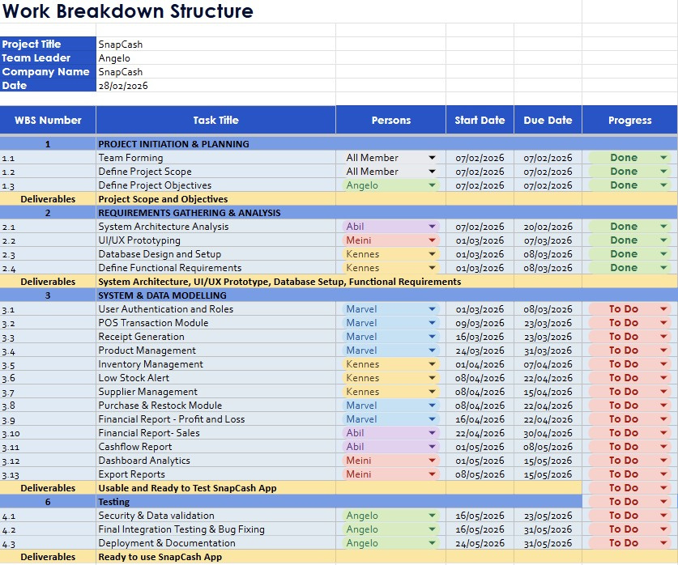
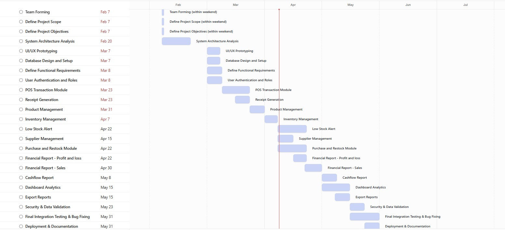

01 / SCOPE & DELIVERY
Backlog and six sprints
Eighteen backlog items cover interface design, the database, POS operations, inventory, reporting, testing, and deployment. The charter organizes delivery into six two-week sprints.
INFORMATION SYSTEMS PROJECT MANAGEMENT
Turning a POS concept into a structured delivery plan.
A group project planning an integrated point-of-sale and business management system for Indonesian MSMEs, especially food and beverage businesses.
PROJECT FOCUS
The project addresses disconnected sales records, stock tracking, and financial reporting in small businesses. SnapCash proposes combining transactions, inventory, supplier management, reporting, and analytics in one POS platform.
Our ISPM submission translates that concept into a project charter, prioritized backlog, sprint plans, scheduling documents, and management plans for budget, risk, and communication.
Project management documentation. The schedules, budgets, growth targets, and financial forecasts describe the team's plans and projections.
MY DOCUMENTED ROLE
The project charter names me as Scrum Master. The risk plan assigns me responsibility for monitoring sprint delays, testing scope, and team workload, with responses such as reprioritizing the backlog and redistributing tasks.
The WBS separately lists me for database design and functional requirements, as well as inventory, low-stock alerts, and supplier-related tasks.
Group 3 consists of Christofer Marveleous Krisdianto, Nabila Ullivia Fatimah, Kennes Jansen, Angelo, and Meini Rusiadi.
Read the project charter ↗PROJECT MANAGEMENT OUTPUTS
Planning artifacts documented in the group report and presentation.
01 / SCOPE & DELIVERY
Eighteen backlog items cover interface design, the database, POS operations, inventory, reporting, testing, and deployment. The charter organizes delivery into six two-week sprints.
02 / SCHEDULING
The WBS and Gantt chart organize responsibilities and planned dates. Activity-on-node and arrow diagrams, critical-path calculations, and float analysis examine task dependencies.
03 / RESOURCES
An IDR 200 million budget plan covers people, infrastructure, tools, equipment, design, testing, documentation, and a contingency reserve.
04 / COORDINATION
A risk register records likelihood, impact, owners, mitigation, and review timing. The communication plan defines stakeholder information needs, reporting frequency, and escalation.
ORIGINAL PLANNING ARTIFACTS
Images extracted from the presentation. Open either image to read it at full size.

The documented view groups initiation, requirements, development, and testing tasks. It marks analysis tasks as done and development and release tasks as to do. Source: presentation, slide 38.

The chart maps the work from initiation and requirements through system modules, testing, and deployment preparation. Source: presentation, slide 40.
GROUP PRESENTATION
Product concept, project charter, sprint planning, scheduling, risk, and communication.
If the presentation does not display here, open the PDF in a new tab or download it.
COMPLETE PROJECT REPORT
SnapCash as a Transaction Solution for MSMEs · Group 3 · BINUS University.
If the report does not display here, open the PDF in a new tab or download it.
Explore more of my design, data, and systems projects.
Back to all projects